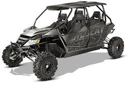

Wildcat Discovery Technologies
Wildcat Discovery Technologies accelerates the discovery of new materials for energy applications, with a focus on the development of advanced materials for rechargeable and primary batteries.
Wildcat synthesizes and evaluates thousands of materials every week. To do this, we use proprietary unique-in-the-world high throughput synthesis and testing platforms to rapidly explore thousands of new materials with the goal of improving performance and reducing costs. Our massively parallel combinatorial chemistry approach reduces R&D costs and speeds time to market. The reduction in experimental cost also enables exploration of high risk targets that are often never explored. For example, one battery project involved the exploration of over 1000 unique electrolyte formulations in less than three months. Wildcat employs an experienced team of scientists and engineers, with backgrounds in batteries, materials development, and high throughput automation. We also have a world class scientific advisory board.Partnership
Wildcat is pursuing partnership and collaboration opportunities with corporate leaders throughout the battery supply chain, including global material suppliers, cell makers, and OEM’s throughout the automotive, electronics, medical, military, and consumer products industries. The steppe wildcat's coat is lighter than the forest wildcat's, and never attains the level of density, length, or luxuriance as that of the forest wildcat, even in winter. The tail appears much thinner than that of the forest wildcat, as the hairs there are much shorter, and more close-fitting. The colours and patterns of the steppe wildcat vary greatly, though the general background colour of the skin on the body's upper surface is very lightly coloured. The hairs along the spine are usually darker, forming a dark grey, brownish, or ochreous band. Small and rounded spots cover the entirety of the species' upper body.